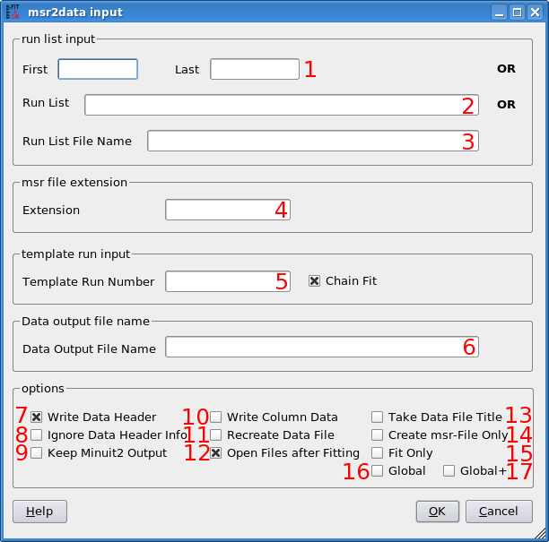

msr2data
1 Introduction
msr2data (originally written by B. M. Wojek) is a program implemented in C++. Its purpose is to process multiple musrfit msr files with the same parameters and summarize the fitting results either in a TRIUMF DB (1) or a column ASCII file. It evolved from a script called mlog2db which has been written only for collecting fit results of LEM data stored in mlog files generated by musrfit and putting them together in a file with the DB format for further analysis. Therefore, any peculiarities, e.g. in supplying options to msr2data are owed its original purpose.
msr2data is free software and licensed under the GNU GPL version 2 or any later version (at your option).
Before the usage of msr2data will be explained in greater detail first be aware of the following:
If using msr2data always bear in mind its limitations!
Notes
1: For an abridged description of this format see here. The DB files produced by msr2data can be viewed for instance with μView, however, they are not completely backward-compatible to the original "db language" since the parameter names can be longer than five or six characters! In order to establish this backward compatibility (if needed) the user has to ensure the correct length of the parameter names in the msr files!
2 Basic Types of Usage
Apart from numerous optional parameters that might be set or not, in principle there are four different ways of callingmsr2data. These differ in how the list of runs which should be processed is supplied: - msr2data <run> <extension> [optional parameters]
- A single run number.
- msr2data <firstRunNo> <lastRunNo> <extension> [optional parameters]
- An interval of run numbers is specified through the first and the last run number. The condition <firstRunNo> < <lastRunNo> is not necessary.
- msr2data \[ <runList> \] <extension> [optional parameters]
- Where <runList> is one or a combination of the following:(i) <run0>, <run1>, <run2>, ... <runN> : run numbers, e.g. 123 124, (ii) <run0>-<runN> : a range, e.g. 123-125 -> 123 124 125, (iii) <run0>:<runN>:<step> : a sequence, e.g. 123:127:2 -> 123 125 127. <step> has to be a positive integer. A <runList> can also combine (i)-(iii), e.g. 123 128-130 133, etc.
- msr2data <runListFileName> <extension> [optional parameters]
- An ASCII file containing a list of run numbers and optional external parameters is passed to
msr2data. For the structure of the ASCII file see below.
msr2data contain the mandatory file-name <extension> passed right after the list of runs. The meaning of this <extension> should become clear after giving examples for all four cases:
msr2data 8472 _tf_h13generates the DB file
out.db (can be changed by using the -o option) from 8472_tf_h13.msr.
msr2data 8472 8474 _tf_h13generates the DB file
out.db (can be changed by using the -o option) from 8472_tf_h13.msr, 8473_tf_h13.msr, and 8474_tf_h13.msr.
msr2data [8472 8470] _tf_h13generates the DB file
out.db (can be changed by using the -o option) from 8472_tf_h13.msr and 8470_tf_h13.msr.
msr2data [8470:8474:2] _tf_h13generates the DB file
out.db (can be changed by using the -o option) from 8470_tf_h13.msr, 8472_tf_h13.msr, and 8474_tf_h13.msr.
msr2data run.list _tf_h13generates the DB file
out.db (can be changed by using the -o option) from all runs listed in the ASCII file run.list in the working directory. In this file it is also possible to include external parameters which should be put in the resulting DB file. The structure of the run.list is the following:
RUN VAR1 VAR2 VAR3 ... 8460 200 27.1 46.2 ... 8472 205 27.1 46.3 ... 8453 210 27.2 45.9 ... · · · · · · · · · · · ·The first not commented and not empty line determines the parameter names and labels and has to be present!
It is allowed to add comments (with a preceding #) or empty lines to the run-list file. The following should be mentioned together with the above examples:
- The output files in the examples above are only newly created if they did not exist before invoking msr2data. If the files were already present the msr-file data would be appended!
- If the files have been newly created, also the DB file header is written. If the files were present before, only the data blocks are appended. The output of the header can either be forced or completely suppressed with the header and noheader options as shall be seen later.
- If the
musrfitoutput files do not have an <extension> as specified above like8472.msrone has to callmsr2datalike in the following example:msr2data 8472 8460 ""
3 Optional Parameters
As mentioned already above there are some optional parameters which change the behavior ofmsr2data and can be passed in any order. Here is a complete list: - data
- The output file format is changed to a simple column ASCII file (default output file name:
out.dat). - new
- An existing output file is deleted before new information is written to it.
- header
- Force the output of the file header—even if the output file was present before.
- noheader
- The output of the file header is suppressed—also if the output file is newly created.
If either both or none of the header options are given,msr2datawrites the file header only to new files and it solely appends the data blocks to an existing output file assuming that the header is present already. - nosummary
- There will be no attempt to read additional information like the temperature or the applied magnetic field from the data files even if these information were present there.
- paramList <param>
- option used to select the parameters which shall be exported. <param> is a list of parameter numbers to be exported. Allowed lists are: <startNo>-<endNo>, e.g. 1-16 will export parameters 1 to 16. Space separated numbers, e.g.: 1 3 5. A combination of both is possible, e.g. 1-16 19 31 62, and so on.
- -o<outputFileName>, -o <outputFileName>
- The processed data will be written to the file <outputFileName> instead of the default
out.dborout.dat. If <outputFileName> is equal to none (case-insensitive) the parameter data are not appended to any output file. - fit
- Additionally to the final data collection
msr2datawill invoke musrfit to fit the specified runs. All msr files are assumed to be present, none is newly generated! - fit-<template>[!]
- Additionally to the final data collection
msr2datawill generate msr files for the runs specified in the list of runs and invokemusrfitfor performing fits of the data. As template for the first run the file<template><extension>.msr(or if not available:<template><extension>.mlog) is used; the subsequent input files will be created using the msr output of the last processed runs ("chain fit"). However, if for all runs only the given template should be used one has to append an exclamation mark (!) to the <template>. - msr-<template>
- The same as fit-<template>[!], without calling
musrfitand the final data collection, i.e. only the msr files for the given runs are generated. - -k
- If specified together with the fit-<template> option, the --keep-mn2-output option is passed to
musrfit. In the case no fits should be done, this option is ignored. - -t
- In case this option is given additionally to the fit-<template> option,
musrfitis called with the --title-from-data-file option. If no fitting is done, this option is ignored.
msr2data 8400 8460 _tf_h13 -oABC.db fit-8472Using
8472_tf_h13.msr as first template, msr2data generates subsequent msr input files 8400_tf_h13.msr through 8460_tf_h13.msr, calls musrfit to perform a fit of these files and collects the results of the fits together with the DB header in the new file ABC.db. Additionally, some information about external parameters like the temperature will be passed to ABC.db if it is present in the data files.
msr2data [8500 8502-8504 8507] _zf fit-8472 noheader nosummary -o DEF.dbUsing
8472_zf.msr as first template, msr2data generates subsequent msr input files 8500_zf.msr, 8502_zf.msr, 8503_zf.msr, 8504_zf.msr and 8507_zf.msr, calls musrfit to perform a fit of these files and collects the results of the fits in the file DEF.db without writing the DB file header or attempting to read additional information from the data files.
msr2data 8595 8585 "" noheader fit-8472! -oGHI.dat data nosummary -kUsing
8472.msr as template for all runs, msr2data generates the msr input files 8595.msr through 8585.msr, calls musrfit with the option --keep-mn2-ouput to perform a fit of these files and collects the results of the fits in the column-structured ASCII file GHI.dat without writing any file header or attempting to read additional information from the data files.
msr2data 8472 8475 "" fit -o noneTake the given msr files
8472.msr through 8475.msr and call musrfit without finally summarizing the results.
msr2data 8472 8475 _tf_h13 msr-8471!Using
8471_tf_h13.msr as template for all runs, msr2data generates the msr input files 8472_tf_h13.msr through 8475_tf_h13.msr. No fitting will be performed and no DB or ASCII output will be generated!
msr2data [8472 8475-8479] _tf_h13 paramList 1-16 data -o bestData.datWill collect the parameters 1 to 16 from the msr-files
8472_tf_h13.msr, 8475_tf_h13.msr, 8476_tf_h13.msr, 8477_tf_h13.msr, 8478_tf_h13.msr, and 8479_tf_h13.msr and write these parameters into a column like output file bestData.dat.
4 The Global Mode
Apart from all the options described above there is another program option: global. This option changes the general behavior ofmsr2data in that way that instead of processing one msr file for each run it combines all specified runs in one single msr file with the possibility to define common parameters for all runs as well as run-specific parameters. When writing the obtained parameters to a DB file or a column-structured ASCII file that single msr file is read and the parameters valid for each run are extracted. The global option can be used in conjunction with any of the described invocations of msr2data and together with all options stated above.
4.1 File Generation
The general idea of this mode is to generate a global msr file on the basis of a working single-run msr file. For this purpose a single-run template containing information about common and run-specific parameters should be created. These parameters are identified through their parameter names:- run-specific parameters
- these parameters are tagged with the current run number in the format %0Xu, i.e. X digits with leading zeros, at the end of the parameter name, e.g. for a 4-digit-formatted run number alpha0123 if the run number was 123 or for a 8-digit-formatted run number alpha00123456 if the run number was 123456. X has to be at least 4.
- common parameters
- all parameters that are not run specific
8472_example.msr could therefore look like:
FITPARAMETER
# No Name Value Step Pos_Error Boundaries
1 Phase 35.8359 -3.94496 3.93749
2 Asy8472 0.04501 -0.00208 0.00211 0 0.33
3 Field 143.212 -0.27960 0.27885 100 200
4 Rate8472 0.14245 -0.02501 0.02279 0 1
Here the parameters 2 and 4 would be treated as run-specific whereas the parameters 1 and 3 would be common to the original and all newly added runs.
Normally, within the template file there should not appear explicitly any run-specific parameters in the THEORY and FUNCTIONS blocks. If however, those parameters are met, msr2data will try to substitute them by mapped parameters and add them accordingly to the map contained in each RUN block.
When msr2data is called to generate a global msr file, e.g.msr2data 8471 8470 _example msr-8472 globala new msr file
8471+global_example.msr is created. As can be seen in the example, the name of the global msr file always starts with the first specified run number followed by the +global identifier and the template <extension>.
The example's global FITPARAMETER block would be:
FITPARAMETER
# No Name Value Step Pos_Error Boundaries
# Common parameters for all runs
1 Phase 35.8359 -3.94496 3.93749
2 Field 143.212 -0.27960 0.27885 100 200
# Specific parameters for run 8471
3 Asy8471 0.04501 -0.00208 0.00211 0 0.33
4 Rate8471 0.14245 -0.02501 0.02279 0 1
# Specific parameters for run 8470
5 Asy8470 0.04501 -0.00208 0.00211 0 0.33
6 Rate8470 0.14245 -0.02501 0.02279 0 1
This shows that the fit parameters are reorganized in a way that the common parameters appear at the beginning of the parameter list and they are followed by copies of the parameters specific to each run (in the specified order!). Additionally, for each specified run new RUN blocks are created—for each run as many as found for the template run.During this reorganization all the affected parameter occurrences are changed accordingly! Please be aware of the fact that comments in the template msr file are not propagated to the newly generated global msr file!
4.2 Parameter Extraction
After fitting some model to the specified data the fit parameters can be extracted from the global msr file to a DB or column-structured ASCII file—as usual this includes also parameters stored in the run data files or externally specified parameters given in a run-list file. In order to reach this goal the global msr file has to obey certain rules:- The order of the parameters has to match the one described above, meaning the common parameters are listed first followed by the same number of parameters specific to each run tagged by the according run numbers at the end of the parameter names and having the same order as the specified list of runs.
- The RUN blocks have to be ordered according to the list of runs to be processed.
msr2data as shown above—the parameters can be extracted e.g. like msr2data 8471 8470 _example global data -o globalFit.datThis will read in the file
8471+global_example.msr, extract for each run all relevant parameters from the msr file as well as from the according data files (if available) and append all of them in columns to the ASCII file globalFit.dat.
4.3 The Extended Global Mode
If a new global input file is generated, it is also possible to do an automatic pre-analysis for each single run using the specified template first; afterwards the run-specific parameters of these single-run msr files are collected in the global msr file. In special cases this might be useful to obtain a better set of starting values for the parameters, however, in most cases it will not replace the "manual review" of the generated global input file. The option is activated by choosing the keyword global+. For examplemsr2data 8471 8470 _example global+ msr-8472Here,
8472_example.msr is first used as template to generate the file 8471-OneRunFit_example.msr, then musrfit is called for it, the result is used to generate 8470-OneRunFit_example.msr and musrfit is called for that file. Finally, the global fit file 8471+global_example.msr is produced—including the fit results of the OneRunFit files for the run-specific parameters.By appending an exclamation mark ! to the global+ option, the given template will be used for every new file generation (similar to the fit option explained before). The +[!] extension will be ignored, if no new global input file is generated.
The single run msr files are not deleted at the moment. The information contained in them might be useful for some people. Of course the data can also be collected by
msr2data. E.g. in order to produce a DB file OneRunFits.db one could call msr2data 8471 8470 -OneRunFit_example -o OneRunFits.dbPlease be aware that the program in this mode always generates new single-run msr files and always calls
musrfit for them. In case there are already single-run fits present, these cannot be used in conjunction with this option. The program on purpose behaves in this way in order to ensure the file integrity and correct parameter order within these files.
5 Known Limitations
- The indexing run number of the msr file has to be at the begin of every filename.
- Within the data file name the RUN# has the format %0Xu, i.e. X digits with leading zeros, and has to be the rightmost number given in this format in the file name. X has to be at least 4. The highest treatable run number is 232-1 = 4294967295.
- In order to keep
msr2dataworking properly the msr files should only contain one STATISTIC block at the end of the file and one FITPARAMETER block right after the TITLE—musrfititself allows to have more creative msr files... - The msr-file generation from a template takes only care of runs given on the first line of a RUN block. ADDRUN statements are simply copied! Since this is most probably not what one likes to do, it is suggested not to use the fit-<template> and msr-<template> options if ADDRUN statements were present in the template file.
-
msr2datawill write only up to two successive empty lines in newly generated msr files. In case more subsequent empty lines are encountered in a template file, these are not copied! Actually, this measure is not a limitation but has been introduced to keep the msr files in a reasonable shape.
6 The Graphical User Interface Provided by musrgui / musredit
musrgui/musredit, editors designed especially for the manipulation of musrfit msr files and graphical front ends to musrfit, offer an almost self-explanatory graphical user interface to msr2data depicted below:
- 1–3
- Choose one of the ways to specify your list of runs.
- 4
- Give the file extension here, e.g. _zf for files like
8472_zf.msr. If the files do not have an extension this field stays empty.musrgui/musredittake care of passing the "" tomsr2dataas mentioned above. - 5
- Activates the fit-<template> option if <template> is entered. In case the option "Chain Fit" is not set the given template will be used for the input-file generation for all runs to be fitted—otherwise the output of the first fit serves as template for the second and so on. The template field stays empty if no fits should be performed!
- 6
- Activates the -o<outputFileName> option if <outputFileName> is entered. If nothing is entered the default output file
out.dborout.datis used. - 7
- If not set, the noheader option is passed to
msr2data. - 8
- If set, the nosummary option is passed to
msr2data. - 9
- If set, the -k option is passed to
msr2data. - 10
- If set, the data option is passed to
msr2data. - 11
- If set, the output file is deleted before
msr2datais called. Otherwise the data is appended to the file if it existed beforemsr2datahas been called. - 12
- If set, after processing by
msr2dataall specified msr files are opened in tabs inmusrgui/musredit. - 13
- If set, the -t option is passed to
msr2data. - 14
- If set,
msr2datais called with the option msr-<template> (instead of fit-<template>) and hence is only producing the msr input files without any fitting. - 15
- If set,
msr2datais called with the option fit, i.e. no template will be used to generate new msr input files; only existing files are fed tomusrfit. - 16
- If set,
msr2datais operating in the global mode. - 17
- If set,
msr2datais operating in the extended global mode.
7 Bugtracking
For reporting bugs or requesting new features and improvements please use the Bitbucket Issues, PSI Tracker or send an e-mail to A. Suter. -- BMW & AS

| I | Attachment | Action | Size | Date | Who | Comment |
|---|---|---|---|---|---|---|
| |
msr2data-input-tabs.png | manage | 36 K | 20 Jul 2011 - 12:13 | UnknownUser | graphical interface to msr2data |
Ideas, requests, problems regarding PSI Wiki? Send feedback

{kind=link}
{kind=link}